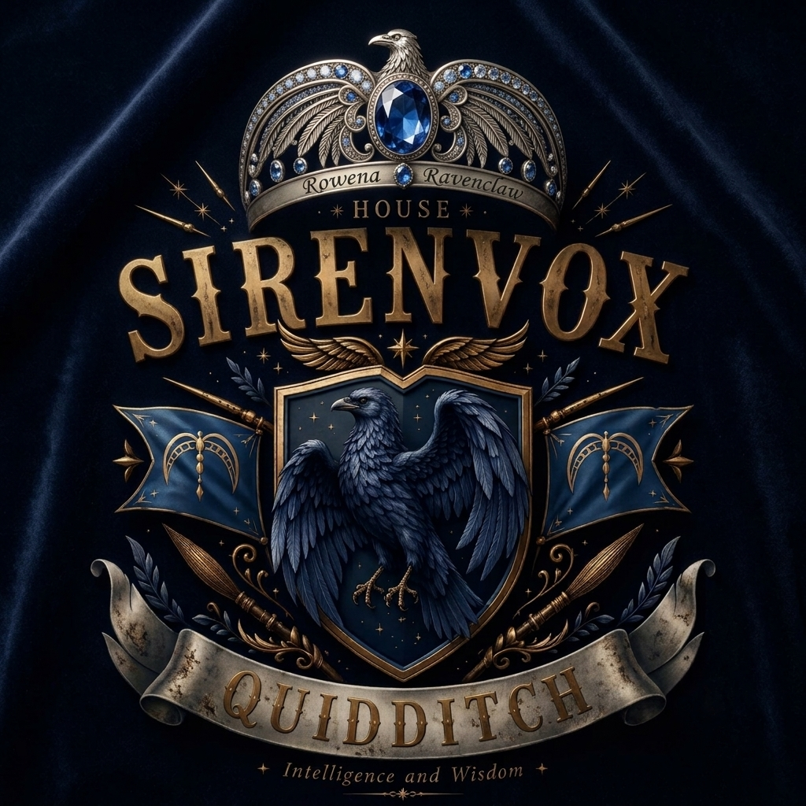

Hogwarts Institute Quidditch
Sejarah Singkat Quidditch – Hogwarts Institute
![[Gambar Quidditch Hogwarts]](https://cdnpro.eraspace.com/media/mageplaza/blog/post/g/a/gameharrypotter.jpg)
Olahraga Quidditch di Hogwarts Institute pertama kali diperkenalkan oleh Sir Hercule Poirot, salah satu penyihir yang menyukai permainan menyusun strategi dan semangatnya terhadap persaingan yang adil. Melihat para siswa membutuhkan kegiatan yang dapat melatih keberanian, kerja sama, dan kepemimpinan, ia menciptakan permainan yang menggabungkan kemampuan terbang, taktik, dan keterampilan sihir.
Pada awalnya, pertandingan Quidditch hanya dimainkan sebagai latihan antar kelompok kecil. Seiring waktu, popularitasnya terus meningkat hingga akhirnya menjadi kompetisi resmi antarrumah di Hogwarts Institute. Setiap musim, para pemain bertanding untuk memperebutkan Piala Quidditch, yang menjadi simbol kehormatan, sportivitas, dan kebanggaan rumah masing-masing.
Hingga saat ini, Quidditch tetap menjadi salah satu tradisi paling bergengsi di Hogwarts Institute, mengajarkan bahwa kemenangan bukan hanya ditentukan oleh bakat, tetapi juga oleh keberanian, kerja sama tim, dan tekad yang kuat.
The Teams
![[Lambang Gryffindor]](https://i.pinimg.com/736x/39/b2/12/39b2126bca6d09b6afb740baf7084aca.jpg)
Gryffindor
Mengutamakan keberanian, kegigihan, dan jiwa ksatria di atas segalanya. Tim Gryffindor dikenal dengan gaya permainan mereka yang berani mengambil risiko, tak kenal takut, dan selalu siap menghadapi tantangan terberat di lapangan.
![[Lambang Hufflepuff]](https://i.pinimg.com/736x/7d/93/4e/7d934eac2b8e3e0c9b8e0f9d2f5d1c1f.jpg)
Hufflepuff
Menjunjung tinggi kesetiaan, kerja keras, dan kebersamaan. Tim Hufflepuff mengandalkan koordinasi yang solid dan semangat pantang menyerah untuk menghadapi setiap pertandingan.
![[Lambang Ravenclaw]](https://i.pinimg.com/736x/0d/77/55/0d7755e2cb5cbb7d7e1dbf8b2e6f2f8e.jpg)
Ravenclaw
Mengandalkan kecerdasan, kreativitas, dan strategi. Tim Ravenclaw dikenal mampu membaca situasi dengan cepat dan memanfaatkan setiap celah di lapangan.
![[Lambang Slytherin]](https://i.pinimg.com/736x/1d/4a/2f/1d4a2f7f5f9d4b8d0c2e3b5f6a7d8e9f.jpg)
Slytherin
Mengutamakan ambisi, kecerdikan, dan ketepatan strategi. Tim Slytherin dikenal dengan permainan yang terukur, disiplin, dan penuh perhitungan.
Cara Bermain
Seeker
Seeker bertugas menemukan Golden Snitch melalui pilihan angka yang diberikan oleh Wasit Quidditch.
Seeker hanya diperbolehkan memilih satu angka pada setiap ronde.
Apabila angka yang dipilih sesuai dengan angka Snitch, Seeker berhasil menangkap Snitch dan pertandingan berakhir.
Seeker tidak boleh menerima bantuan dari pemain lain.
Jika tidak memberikan pilihan, pemain dianggap tidak melakukan aksi pada ronde tersebut.
Chaser
Chaser bertugas membawa Quaffle dan berusaha mencetak poin ke gawang lawan.
Setiap ronde, Chaser akan menentukan pilihan berdasarkan opsi yang diberikan oleh Wasit Quidditch.
Keberhasilan serangan ditentukan berdasarkan keputusan Keeper lawan.
Jika Chaser berhasil mencetak gol, tim mendapatkan poin sesuai sistem pertandingan.
Jika tidak memberikan pilihan, pemain dianggap tidak melakukan aksi pada ronde tersebut.
Beater
Beater bertugas mengendalikan Bludger dan memberikan tekanan terhadap pemain lawan.
Setiap ronde, Beater menentukan target dan tindakan berdasarkan pilihan yang tersedia.
Keberhasilan aksi Beater dapat memengaruhi jalannya permainan dan pemain yang menjadi target.
Koordinasi antar Beater menjadi salah satu faktor penting dalam menjaga keseimbangan permainan.
Jika tidak memberikan pilihan, pemain dianggap tidak melakukan aksi pada ronde tersebut.
Keeper
Keeper bertugas menjaga tiga ring dari serangan Chaser lawan.
Keeper harus menentukan ring yang akan dijaga pada setiap ronde.
Jika pilihan Keeper berbeda dengan arah serangan Chaser, gol berhasil dicetak.
Jika pilihan Keeper sesuai dengan arah serangan Chaser, serangan berhasil dihentikan.
Jika tidak memberikan pilihan, pemain dianggap tidak melakukan aksi pada ronde tersebut.
Hall of Fame
Sejarah gemilang pencapaian para atlet Quidditch Hogwarts Institute.
THE CHAMPIONSHIP CUP

Gryffindor
Untuk House yang berhasil menjadi yang terbaik. Diberikan kepada House yang berhasil menjadi juara House Broom Tournament pada musim tersebut.
THE RISING HOUSE

Ravenclaw
Untuk House yang berkembang melampaui ekspektasi. Diberikan kepada House yang menunjukkan perkembangan paling signifikan sepanjang House Broom Tournament, baik dari segi performa, strategi, kerja sama tim, maupun hasil pertandingan.
THE SEEKER'S CROWN

Zenith Azure Stark
Untuk Seeker yang menguasai perburuan Snitch. Diberikan kepada Seeker dengan performa paling menonjol sepanjang House Broom Tournament, berdasarkan kemampuan menangkap Snitch, ketepatan waktu, konsistensi, serta kontribusinya terhadap tim.
THE QUAFFLE TRINITY

- 1. Sylla Luthariél
- 2. De Broglie White Jaechas
- 3. Melly Candies Rosier Malfoy
Untuk tiga Chaser yang bermain sebagai satu kesatuan. Diberikan kepada trio Chaser dengan koordinasi, kerja sama, permainan menyerang, passing, dan kemampuan mencetak poin yang paling menonjol sepanjang House Broom Tournament.
THE BLUDGER SENTINELS

- 1. Sera Serenity
- 2. Elion Lysander Zephyr
Untuk duo yang mampu mengendalikan kekacauan di lapangan. Diberikan kepada pasangan Beater dengan koordinasi, kontrol Bludger, kemampuan bertahan, dan pengaruh terhadap jalannya pertandingan yang paling menonjol sepanjang House Broom Tournament.
THE IRON HOOPS

Stella Lucyanna Celeste
Untuk Keeper yang berdiri di antara tim dan kekalahan. Diberikan kepada Keeper dengan kemampuan penyelamatan, positioning, konsistensi, dan kontribusi pertahanan yang paling menonjol sepanjang House Broom Tournament.
Klasemen
Gryffindor
Points: -
Hufflepuff
Points: -
Ravenclaw
Points: -
Slytherin
Points: -
Jadwal Pertandingan
Match 1
House Broom Tournament - [Tanggal]
Match 2
House Broom Tournament - [Tanggal]
Grand Final
Ultimate Match - [Tanggal]
Peraturan Resmi
- Setiap tim terdiri dari 7 pemain.
- Setiap pemain hanya boleh menjalankan tugas sesuai role yang dimiliki.
- Semua pilihan dikirim secara pribadi kepada Wasit Quidditch.
- Setiap ronde memiliki batas waktu 1 menit.
- Pemain yang tidak mengirim pilihan dianggap tidak melakukan aksi.
- Keputusan Wasit Quidditch bersifat mutlak dan tidak dapat diganggu gugat.
- Permainan berakhir ketika Golden Snitch berhasil ditemukan oleh Seeker.
Aturan Mutlak
Seeker harus bekerja mencari snitch sendirian, dan tidak boleh dibantu oleh siapapun. Apabila ada tindak kecurangan yang dilakukan, maka asrama tersebut akan didiskualifikasi selama 3 season, dan mendapatkan pengurangan poin asrama sebesar 300 points.
"Junjung Tinggi Permainan Adil dan Sportif!"